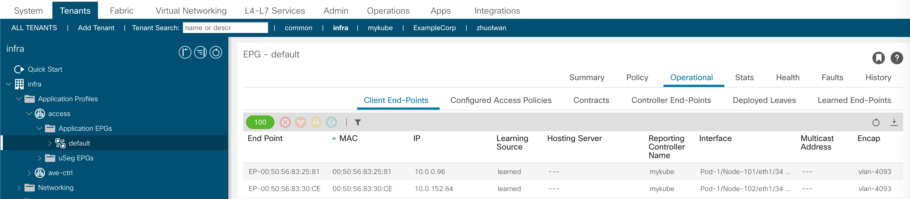
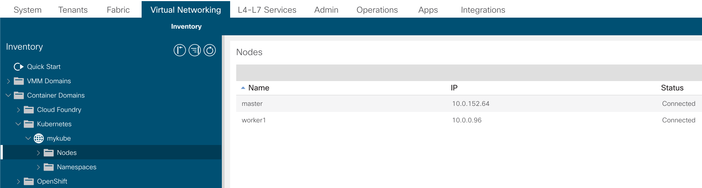
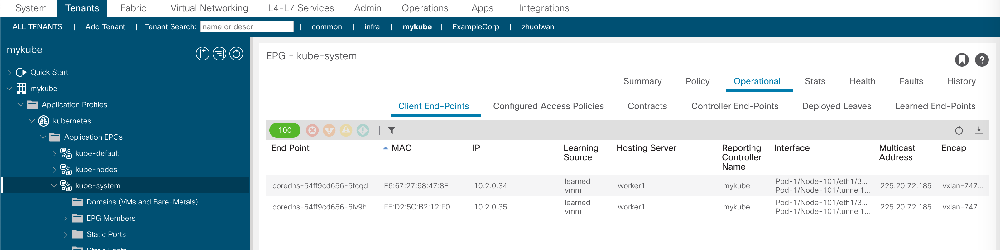

ACI CNI 集成
在master node上部署ACI CNI Plugin，
1. 部署在集成中生成的CNI config YAML文件
root@master:~# kubectl apply -f aci-cni-config.yaml
configmap/aci-containers-config created
secret/aci-user-cert created
serviceaccount/aci-containers-controller created
serviceaccount/aci-containers-host-agent created
clusterrole.rbac.authorization.k8s.io/aci-containers:controller created
clusterrole.rbac.authorization.k8s.io/aci-containers:host-agent created
clusterrolebinding.rbac.authorization.k8s.io/aci-containers:controller created
clusterrolebinding.rbac.authorization.k8s.io/aci-containers:host-agent created
daemonset.apps/aci-containers-host created
daemonset.apps/aci-containers-openvswitch created
deployment.apps/aci-containers-controller created
root@master:~#
2. 监控k8s cluster状态
root@master:~# kubectl -n kube-system get pod -o wide
NAME READY STATUS RESTARTS AGE IP NODE NOMINATED NODE READINESS GATES
aci-containers-controller-678d948fdb-57gqg 1/1 Running 0 114s 172.16.100.12 worker1 <none> <none>
aci-containers-host-gsz6c 3/3 Running 0 114s 172.16.100.11 master <none> <none>
aci-containers-host-qv697 3/3 Running 0 114s 172.16.100.12 worker1 <none> <none>
aci-containers-openvswitch-qsmqp 1/1 Running 0 114s 172.16.100.11 master <none> <none>
aci-containers-openvswitch-zvp5w 1/1 Running 0 114s 172.16.100.12 worker1 <none> <none>
coredns-54ff9cd656-5fcqd 1/1 Running 0 34m 10.2.0.34 worker1 <none> <none>
coredns-54ff9cd656-6lv9h 1/1 Running 0 34m 10.2.0.35 worker1 <none> <none>
etcd-master 1/1 Running 0 33m 172.16.100.11 master <none> <none>
kube-apiserver-master 1/1 Running 0 33m 172.16.100.11 master <none> <none>
kube-controller-manager-master 1/1 Running 0 33m 172.16.100.11 master <none> <none>
kube-proxy-l9vs5 1/1 Running 0 25m 172.16.100.12 worker1 <none> <none>
kube-proxy-ls9nb 1/1 Running 0 34m 172.16.100.11 master <none> <none>
kube-scheduler-master 1/1 Running 0 33m 172.16.100.11 master <none> <none>
root@master:~#
3. 从ACI检查K8s状态
检查Node的Infra IP ("Infra Tenant" - access - Default EPG)

VMM Domain中可以看到node connected 
在kube-system EPG中可以看到KubeDNS node 